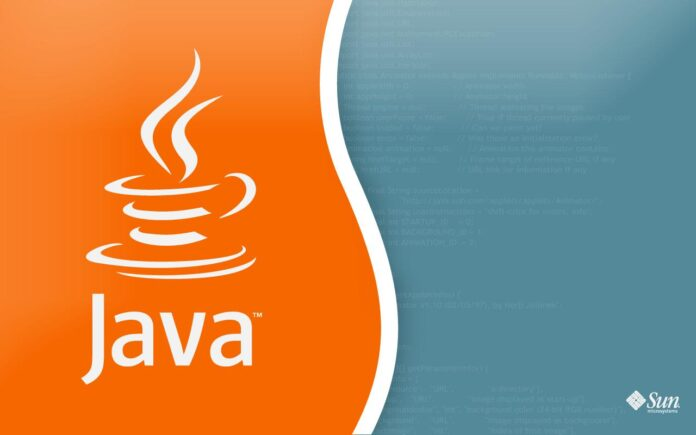

eNews
La niña desastre
"La niña desastre", la famosa imagen de Zoë Roth cuando tenía cinco años frente a una casa en llamas, es desde hace años una de las más compartidas en redes sociales.
Su rostro pícaro -o malévolo, depende cómo se mire- se ha vuelto un clásico que ha acompañado a algunas de las fotografías o cuadros de las tragedias y momentos más terribles de la historia.
La joven, ahora de 21 años, aprovechó la fama de su imagen y acaba de venderla por US$500.000, una suma suficiente, según dijo, para pagar sus deudas estudiantiles, repartir entre su familia y donar a caridad.
Python cumpe 30 años y está en mejor forma que nunca
Publicado el 23 febrero 2021 por https://www.muycomputerpro.com/
El pasado 20 de febrero se cumplieron 30 años de un hito de los lenguajes de programación: sin ser demasiado consciente de lo que significaría después, el infirmático holandés Guido von Rossum, publicaba la primera versión de Python. A lo largo de estas décadas, el uso de Python (como el de otros lenguajes de programación) ha tenido sus más y sus menos, defensores a ultranza y detractores… pero tal vez nunca, al calor del machine learning y la Inteligencia Artificial, ha sido tan popular como lo es en estos momentos.
Su conocida flexibilidad y versatibilidad, han hecho de Python uno de los lenguajes preferidos para los desarrollos web y de hecho, aplicaciones tan populares como Dropbox o Instagram, están escritas en este lenguaje. Con un uso cada vez más extendido en el mundo de la supercomputación, clave para científicos de datos, investigadores y matemáticos, Python se ha convertido en el último año en el segundo más empleado, tan solo superado por Java.
JavaScript

Tecnología para desarrolladores web
JavaScript (JS) es un lenguaje de programación ligero, interpretado, o compilado justo-a-tiempo (just-in-time) con funciones de primera clase. Si bien es más conocido como un lenguaje de scripting (secuencias de comandos) para páginas web, y es usado en muchos entornos fuera del navegador, tal como Node.js, Apache CouchDB y Adobe Acrobat. JavaScript es un lenguaje de programación basada en prototipos, multiparadigma, de un solo hilo, dinámico, con soporte para programación orientada a objetos, imperativa y declarativa (por ejemplo programación funcional).
Java
¿Qué es la tecnología Java y para qué la necesito?
Java es un lenguaje de programación y una plataforma informática comercializada por primera vez en 1995 por Sun Microsystems. Hay muchas aplicaciones y sitios web que no funcionarán a menos que tenga Java instalado y cada día se crean más. Java es rápido, seguro y fiable. Desde portátiles hasta centros de datos, desde consolas para juegos hasta súper computadoras, desde teléfonos móviles hasta Internet, Java está en todas partes.